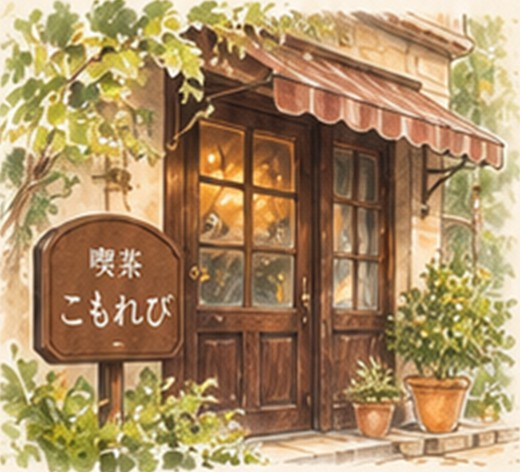

SUNABACO 制作課題 · 架空の喫茶店
昔ながらの一杯と、
ほっとする時間を。
オーナーの想い

地域の皆さまが、ふっと肩の力を抜いて過ごせる、やすらぎの場所でありたい。
長く愛されてきた喫茶店の、あたたかな雰囲気をこれからも大切にしていきます。
はじめての方も、どうぞお気軽にお立ち寄りください。
店舗情報
- 営業時間
- 8:00〜18:00
モーニング 8:00〜11:00 - 定休日
- 毎週水曜日
- 住所
- こもれび市 ひだまり町 1丁目（架空）
- 電話
- 設定なし（架空店舗）
アクセス
アクセスマップの表示テストとして、SUNABACOの所在地を表示しています。
※喫茶こもれびは架空の店舗です。実際の所在地ではありません。
お知らせ
春の限定メニューがはじまりました
春のメニューとして、いちごのクリームソーダをご用意しました。（架空のお知らせ）
コーヒー豆を新しく仕入れました
ブレンドに使う豆を入荷しました。香ばしい一杯をお楽しみください。（架空のお知らせ）
定休日変更のお知らせ
3月より、毎週水曜日を定休日とします。（架空のお知らせ）